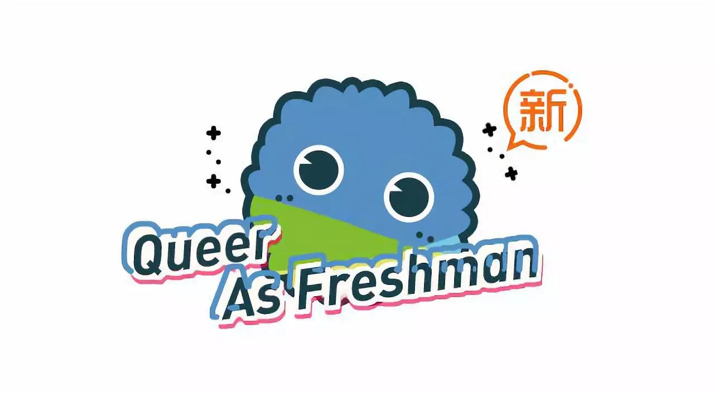
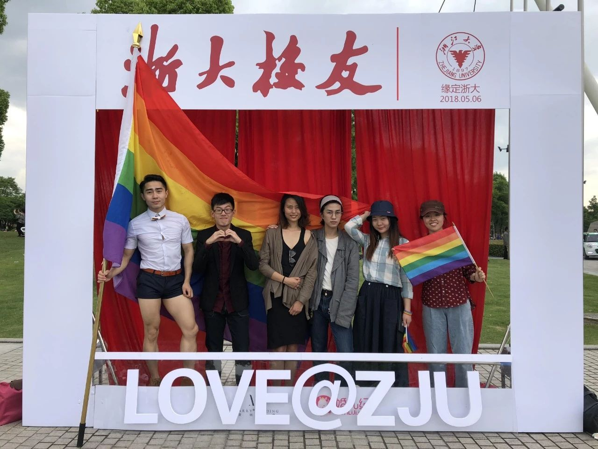

新生同志问题指南 | 安全+公益篇


▼
新生同志问题指南
原作者：烟玉暖阳 kiokio
修订人：Owen 烟玉暖阳 丸子 琉璃 Anna
排版：abcxyz 青雀 Dale 文文 Ray
统筹：雨林
鸣谢：皮皮 卡乐

▎性安全和暴力
与女性发生自愿性关系的最低安全线是14 周岁，与未满14 周岁的女性发生性关系无论对方是否自愿都以强奸论处。如果以性以外的方式可能会被以猥亵儿童论处。与男性发生自愿性行为目前尚没有定论，但是与未满14 周岁的男性发生性关系无论对方是否自愿可能会被以猥亵儿童论处。
强奸是指违背妇女意志，使用暴力、胁迫或者其他手段，强行与妇女发生性交的行为，或者故意与不满14周岁的幼女发生性关系的行为。目前没有针对同性强奸的法律条文，但是同性间强迫性行为已经会被入罪并承担刑事责任。
另一项与性相关的安全问题是性骚扰。男性和女性都可能成为性骚扰的对象，但是女性遭受到的性骚扰的几率大得多，数据也显示性少数群体更容易遭遇性骚扰。界定性骚扰一般从三个角度：权力关系、对方的表达方式、自我感受。由于法制建设和社会压力等原因，性骚扰对象往往难以确认和公开自己的性骚扰遭遇。中国法律并没有明确定义性骚扰，但以侵犯人格权或猥亵为依据维护自身的权益仍然是可行的，留足证据在这个过程中显得至关重要。此外，寻求心理支持和同伴帮助，明确表达对性骚扰的拒绝，利用举报、投诉等其他方式进行维护也都是值得采取的措施。
在性少数群体中更容易出现家庭暴力，比如来自亲密关系的暴力和原生家庭的暴力，包括身体上的和精神上的。所以，家庭暴力是一个很宽泛的概念，包含我们常见的伴侣之间的羞辱、出柜后父母的殴打、辱骂、限制人身自由等。与性骚扰类似，这样的暴力行为更难以被界定和公开，所幸的是，2016年3月开始实行的《反家暴法》也在法条中也较为宽泛地定义了家暴，使得依法维护我们在亲密关系和原生家庭中的权益成为可能，当然这还需要等待更多的司法实践。

• 彩虹暴力终结所
▎性行为安全
不同的性行为可能伴随着体液的交换或者器具进入身体，这可能引发包括艾滋病、乙肝、尖锐湿疣等疾病的传播，尤其是在对发生对象身体健康状况不明的情况下。因此正确地使用性安全用品比如安全套、指套，能够有效地在性行为中保护自己免受疾病的侵害。不能因为对方是自己的伴侣而放松警惕，对自己负责才是对ta 负责。通过定期检查来了解自身和伴侣的健康状况是十分有必要的。
HIV 面前，没有高危人群，只有高危性行为，注重性安全是防止感染的重要手段。我们无法从一个人的外表和他的言行去判断其是否是感染者，而一个人有没有感染HIV 更与他的品行和道德没有必然关联。如果你不能确定对方是否感染了HIV，那么都请将对方视作可能的HIV 携带者，并始终在性行为中注意安全防护。安全性行为的主要要点包括防止体液交换、在插入式性行为中正确使用安全套/指套、口交时使用口腔保护膜、非插入式性行为中正确清洁或障壁。将阴茎在射精前拔出的“性交中断法”（或称体外射精）不是安全性行为。

具体保护措施包括男性戴安全套前务必将前面的储精囊挤扁，以免留有气泡被挤压破裂；肛交时自始自终都要戴安全套（戴一个就行，两个会因为乳胶摩擦而破损）；中途如果发现安全套破损或脱落，需要及时更换；使用水性润滑剂（如KY），而不是油性润滑剂（如凡士林），否则会使安全套破损；请勿体内射精，包括直肠中及口腔中，如果不慎射在了口腔里，请直接吞咽（口腔里可能会有破损，而胃液足够杀死病毒）；做爱前请检查体表及口腔有没有破损，特别是开放性创口。尽管女同的 HIV 感染率较低，但有条件的情况下最好也使用指交套，也可以避免其他感染。要确认一个人是否有感染HIV或其他性传播疾病，唯一可以相信的是检测报告，请到当地社群小组、疾控部门或者有资质的医院进行检测。
此外，调整自己看待艾滋病及其他性病与感染者的方式，也是保护自己的策略之一。艾滋病并不可怕，大多数感染者在接受治疗后与正常人无异，日常生活也不会导致传染；大多数性病患者也可以在治疗后保持良好的生活质量。帮助他们调整、让他们敢于面对和承认，营造一个非歧视的社会环境，不仅是对他们的帮助，也是对自己的保护。相反，如果你是在一个谈艾色变、HIV携带者受到巨大压力的社会，每个人应该得到的关于安全性行为、艾滋病检测和治疗的正确信息被无法推广和被现实的禁欲宣传所取代；潜在的感染者由于信息缺乏和歧视带来的恐惧，不敢进行检测和治疗，有性需求的感染者不敢向性伴透露感染状况，促进了艾滋病的传播。我们对HIV感染者的歧视与污名，最终会将我们置于更大的感染风险下。
▎信息安全
性倾向、性别认同和你的其他个人信息一样都属于隐私，然而在当下的法律实践中被出柜的情况是否被认定为侵犯隐私权仍然是一个有待探讨的问题。因此，在自由、骄傲地作为一个同志生活和被他人得知身份的可能风险之间需要你进行一个权衡，在隐私被暴露后你也可以选择积极地进行维权，例如寻求彩虹法律热线等组织的帮助。
• 彩虹法律热线
▎约会要注意什么？
如果你是第一次赴约，可以带上自己的朋友，或者尽量选择在人多的公共场合。如果是被邀请去往对方指定的地点，请牢记前往的路线并将自己的行踪尽可能透露给自己的朋友。交谈中不要透露过多的敏感信息比如自己的收入、自己的家庭背景等等。
参与公益是一种美德。参与同志公益从来不是每个同志的义务，你可以永远只关心自己的生活，不与其他人谈论性别认同、性向和人权的话题，你可以为了伪装成“顺性别直人”而并且表现出对性少数的鄙夷；但你也可以向你周围的朋友宣传性倾向、性别多元平等的观念，你也可以勇敢地站出来向更多的人大声呼吁，又或者向其他摇旗呐喊的同志进行精神上或者物质上的支持，因为参与同志公益是一种美德，它让这个群体的生存状态一步步得到改善，这种行动理应得到称赞。

• 酷儿论坛参与上海骄傲节LGBT小组开放日活动
中国的公民政治权利（如游行、集会等）虽因种种原因有待进一步落实，但这并不代表同志公益在这个国家就无法开展。我们仍然有诸多可以规避风险的方式来进行活动，诸如网络宣传、骑行、纪录片拍摄、讲座、行为艺术等。能上大街宣传当然是不错的行动方式，而同志社群内部的自我认同的倡导也未尝不是一种努力，即便是向室友、同学出柜（在风险有保证的情况下）也能提高性少数人群的能见度。

• 2018年酷儿论坛参与浙大集体婚礼倡导活动
参与公益从来不是一种义务，但它是一种美德。我们呼吁同性恋朋友以及其他朋友都能在力所能及的范围内为性少数人群平权运动贡献出自己的一份力量，哪怕是一次微博转发，一次评论跟帖，关注就是力量。
最后，祝你们的大学生活都能活出自己的精彩~！

由于指南的篇幅较长，阅读体验可能不太好。今年的推送，我们尝试将其分期发送。并在后面几期中附上其他篇的链接。希望大家继续关注。